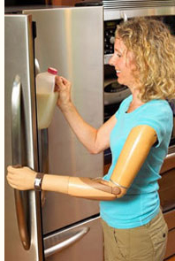

Prosthetic Services: Upper Extremity
Conventional and Body-Powered Prosthesis
 Conventional or body-powered arm prosthesis is so-described because it is operated with body power alone, and is not externally powered. Conventional or body-powered prostheses are the most durable prostheses. They are also moderate in cost and weight. However, body-powered prosthesis is less cosmetically pleasing than myoelectrically-controlled type and also requires more gross limb movement.
Conventional or body-powered arm prosthesis is so-described because it is operated with body power alone, and is not externally powered. Conventional or body-powered prostheses are the most durable prostheses. They are also moderate in cost and weight. However, body-powered prosthesis is less cosmetically pleasing than myoelectrically-controlled type and also requires more gross limb movement.
• Transradial (below-elbow or BE) prosthesis includes a split hook, friction wrist, double-walled plastic-laminate socket, flexible elbow hinge, single-control-cable system, triceps cuff, and a harness.
• Transhumeral (above-elbow or AE) prosthesis includes an internal-locking elbow with a turntable for missing elbow, uses a dual-control-cable system, and does not require a triceps cuff.
Myoelectric Prosthesis
A myoelectric prosthesis uses muscle contraction as a signal to activate and control the prosthesis. Batteries and motors are used to operate these prostheses. There are two different types of controls systems available in these prostheses: myoelectric and switch control. A myoelectrically-controlled prosthesis uses signals from the muscle to activate the prosthesis. It detects electrical activity from limb muscles, with surface electrodes.
Switch-controlled prostheses use small switches, rather than muscle signals, to operate the prosthesis. These switches are typically enclosed inside the socket or incorporated into the suspension harness of the prosthesis. A switch can be activated by the movement of the remnant digit or bony prominence against the switch, or by pulling on a suspension harness.
Many myoelectric control systems allow the use of proportional control so that the speed or activation varies with the intensity of the muscle contraction. Myoelechic prostheses include:
• Ottobock DynamicArm Elbow: The DynamicArm Elbow gives users the power and speed to get things done. It incorporates a powerful electric motor to help both flex and extend the elbow – while holding up to 11 lbs. The DynamicArm is controlled entirely by myoelectric signals. In addition to hand and rotation of wrist joint, elbow joint flexion can also be controlled by muscle signals. The prosthesis is particularly inconspicuous, thanks to operating noise optimized by sound engineering as well as the slightly dampened – and completely silent – free swing phase. These special technology features are integrated in an elbow joint-forearm system with a natural, anatomic design. The shape and basic color blend in with the overall image of the human body.
• bebionic3 Hand: The bebionic3 hand from Steeper features individual motors in each finger, which allows the user to move the hand and grip in a natural coordinated way. Powerful microprocessors continuously monitor the position of each finger for precise, reliable control over hand movements. The hand has 14 selectable grip patterns, proportional speed control, and auto grip sensor. The hand has a wireless programmer and bebalance custom software, allowing the hand’s performance and control options to be fully customized.
• Michelangelo® Hand: Ottobock’s Michelangelo® Hand has seven functional options, including a moveable thumb, allowing the user to pick up objects sideways, grip flat items from the side, carry cylindrical objects with a large diameter, and hold small objects securely using the thumb, middle finger, and index finger to form a three-point support. A neutral mode allows for resting the hand in a natural position.
• i-limb™ quantum Hand: Incorporating Touch Bionics’ patented i-mo™ technology, i-limb™ quantum is the only upper limb prosthesis that can change grips with a simple gesture. Gesture control enables an automated grip to be accessed by moving the i-limb quantum in one of four directions. The quantums act as fully functioning hands. They respond to commands faster, are lightweight, and their anatomical styling in three sizes fits female amputees. Finger flexibility and grip options allow for typing, picking up small objects, holding delicate items, and much more.
• i-digits™ quantum: With redesigned componentry and digits, the prosthesis for partial hand amputees from Touch Bionics is smarter, faster, stronger and smaller than its predecessors. Wearers can quickly utilize the many grips available through the activation of gesture control. Gesture control allows the user to quickly access many grips in performing everyday tasks. The new design is not only slimmer but also lighter allowing users to easily wear their prosthesis all day.
Cosmetic Restoration Prosthesis
 Cosmetic shoulder and forequarter restoration prostheses provide body balance and improve a patient's appearance.
Cosmetic shoulder and forequarter restoration prostheses provide body balance and improve a patient's appearance.
The main advantage of most cosmetic restoration prostheses is their cosmetic appearance. With the advances in materials and design, some passive hands are virtually indistinguishable from native hands.
However, most of these cosmetic prostheses are usually less functional and more expensive than active terminal devices.
Forequarter/Shoulder Disarticulation
 In circumstances where an amputation is required at the shoulder or forequarter level, function is difficult to restore. In the past, due to a combination of factors: weight of prosthetic components and decreased function due to multiple joints, a purely cosmetic prosthesis is used to improve body appearance and to improve body balance.
In circumstances where an amputation is required at the shoulder or forequarter level, function is difficult to restore. In the past, due to a combination of factors: weight of prosthetic components and decreased function due to multiple joints, a purely cosmetic prosthesis is used to improve body appearance and to improve body balance.
At present, however, a myoelectric arm offer amputees with forequarter and shoulder disarticulation a more realistic solution. The myoelectric arm works under the influence of electric signals extracted from skin surface. These signals are used to run various motors which enable the patient to grip and move limbs in an efficient manner.